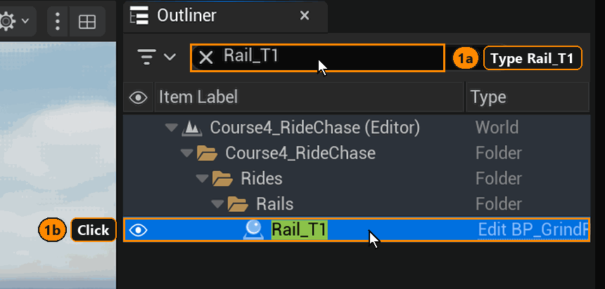
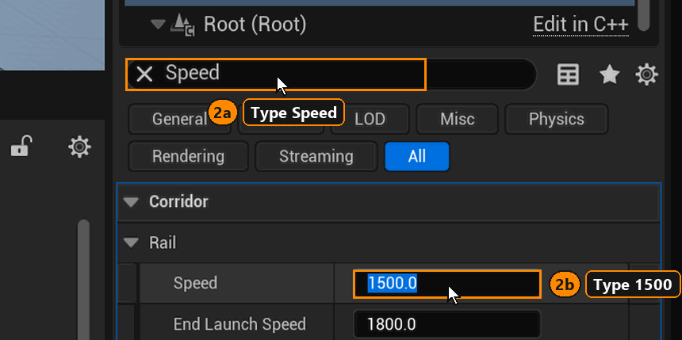
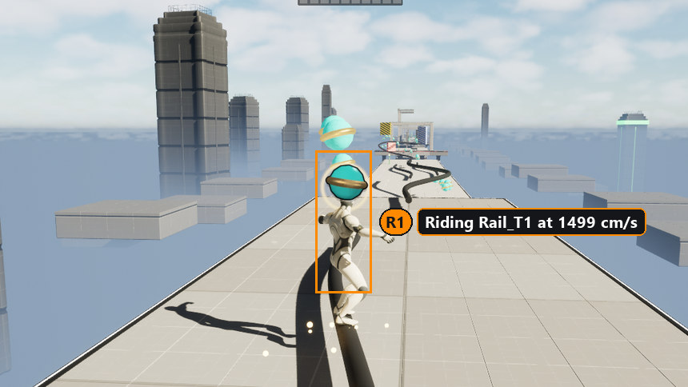
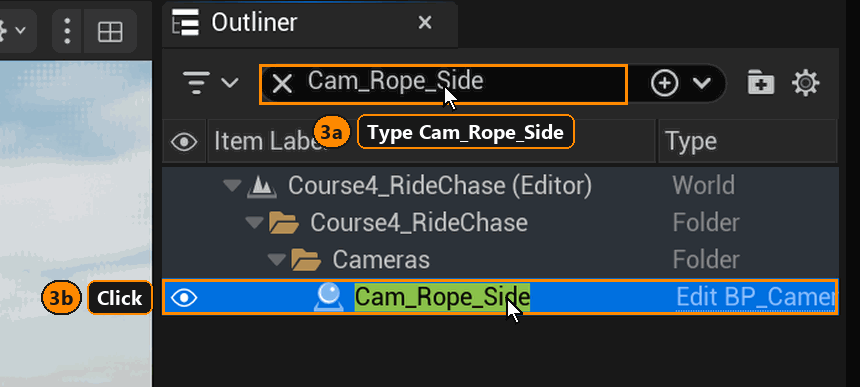
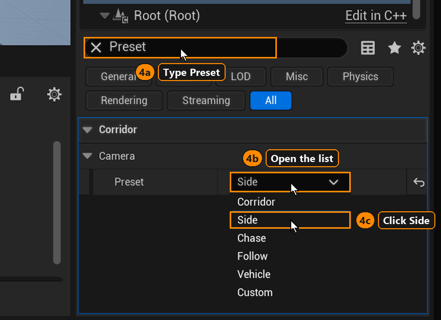
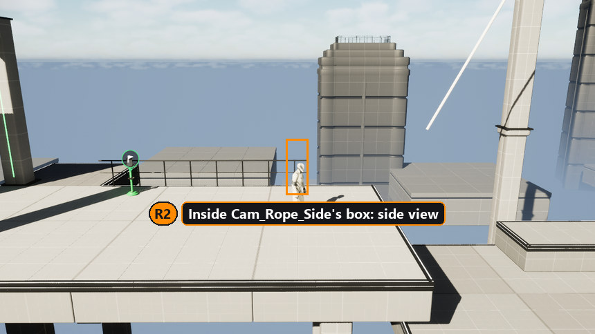

10. Rails and camera views
Goal: tune a grind rail, and give a stretch of your level its own camera view.
You need: Unreal Engine 5.3–5.8 with the plugin enabled (pictures: 5.7), Settings > Plugin Content ticked in the Content Browser (5.3–5.5: Show Plugin Content), and the demo map Course4_RideChase open (Plugins > Proving Grounds: 3D Platformer Mechanics > Maps). For your own level, drag BP_GrindRail (Blueprints > Traversal) or BP_CameraView (Blueprints > Camera) from the same plugin folder into it; every field below is the same.
Part 1: a grind rail
- In the Outliner search box type Rail_T1 and click its row. The first rail of the course is selected, its spline points show in the viewport.

- In the Details search box type Speed, click the Speed box, type 1500 and press Enter (cm/s along the rail; the default is 1029).

The other fields of the rail sit in the same Corridor > Rail group (type the name into the search box to find one):
| Field | Default | What it does |
|---|---|---|
| Capture Radius | 90 | How close sideways (cm) the line gets the hero on, walking or falling onto it. |
| Curve Lean Radius | 600 | A curve this tight (radius, cm) leans the hero fully into it; 0 = no lean from curves. |
| Curve Bank Angle | 12 | Degrees the body banks into a curve at full lean; 0 = stays upright. |
| Rail Camera | on | The camera rides the rail behind the hero while riding. |
| Both Ways | off | Off: always rides the way the line is drawn. On: rides the way the hero was going when it got on. |
| Hang Enabled | on | Slide while riding hangs the hero under the rail. |
| Override Camera | off | On: this rail uses its own Camera Settings instead of the hero's Camera Director > Rail Camera. |
- The line is the rail's Path spline. To bend it, click one of its points in the viewport and move it with the gizmo; Alt-drag a point to add a new one.
- Two read-only values in the group show what your line asks for: Tightest Curve Radius and Peak Turn Rate. Keep the radius at or above Speed / 150 deg/s (393 cm at 1029 cm/s, 573 cm at 1500); tighter bends still ride, but the camera turns no faster than its Max Turn Rate there.
Click Play and walk onto the first rail: the hero rides it at Speed (measured 1499 cm/s with Speed 1500), the rail camera behind it.

Part 2: a camera view
- In the Outliner search box type Cam_Rope_Side and click its row: the camera view of the rope section.

- In the Details search box type Preset, open the list next to Preset and pick Side. A preset fills in the view's numbers; Custom leaves them as they are.

| Preset | The camera |
|---|---|
| Corridor | behind the hero along the rail |
| Side | 2D, beside the rail |
| Chase | in front: the hero runs toward the camera (mounts, chase sections) |
| Follow | the hero plus a world offset |
| Vehicle | behind a jetboard, swinging round with it |
| Custom | keeps your numbers |
- The view switches on when the hero walks into its box (Volume, and any other box you add to the actor) and blends in over Blend In Time (1.5 s here).
- With Mode Rail the camera rides the view's own Rail spline: draw it along the level about 95 cm above the hero's centre.
Result
Click Play and walk into the rope section: after the 1.5 s blend the camera looks at the hero from the side, about 13 m away and a little above (measured: camera yaw -90°, pitch -15°), and the level runs from left to right.

If it doesn't work - The hero walks through the rail: Can Grind Rail is off on the hero (topic 5), or the rail is higher above the floor than the hero can reach; Capture Radius sets how close it must come. - The view never switches: the hero does not enter the view's box; select the view and scale its Volume over the path. - Views you placed above or below a rail are reached only while riding: the rail camera engages only on the rail.
See also: Grind Rail · README: Cameras